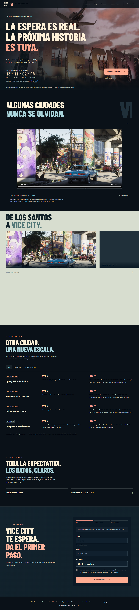
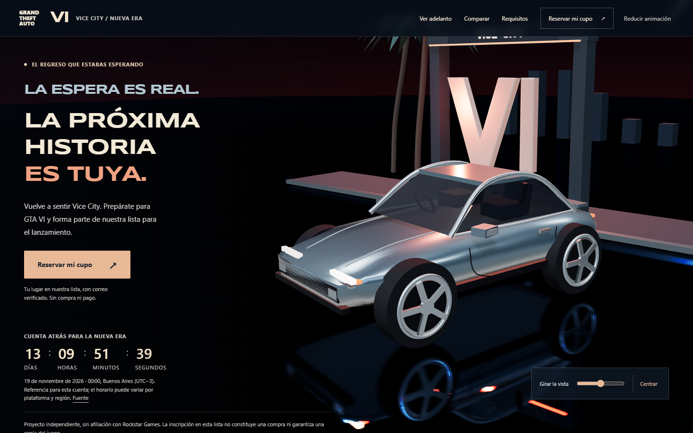
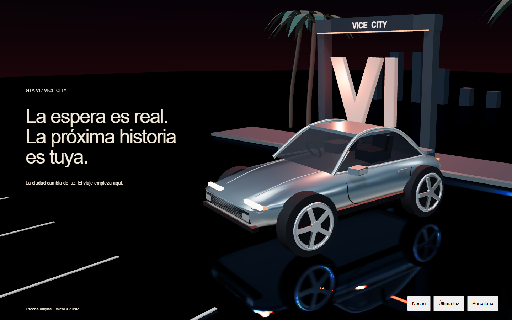
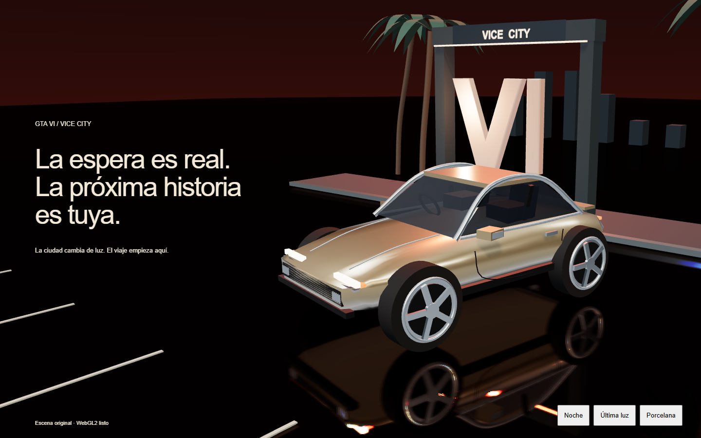
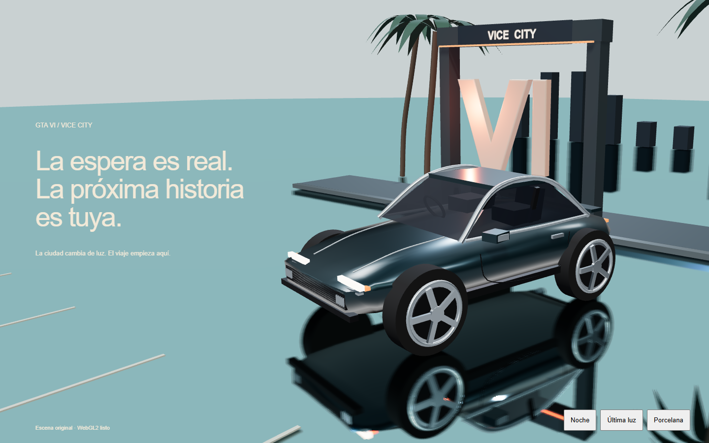
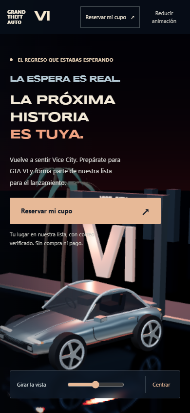
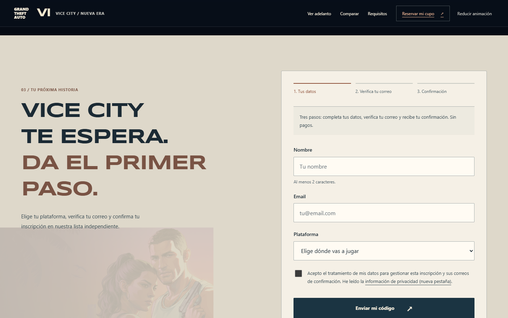

Vice City: nueva identidad espacial
Comparación de capturas reales. La escena actual es Three.js en tiempo real; estas imágenes no sustituyen la comprobación del movimiento.
Abrir la propuesta local interactiva
Antes: imagen plana y tipografía de cartel

Captura completa original recortada por CSS a su primer viewport, sin editar la imagen.Ahora: escenario original 3D

Cámara, luces, pintura, vidrio y reflejo planar. Contenido y controles en HTML.Tres estudios de la misma escena

Nocturna, elegida: protagonismo del objeto y contraste de luces.
Última luz: demasiado uniforme entre carrocería y luz cálida.
Porcelana: pierde atmósfera y contraste en la copia equivalente.Adaptación móvil

Cierre de registro

Recorrido grabado · 44 segundos
Captura del navegador a 1280 × 900. Sin audio.